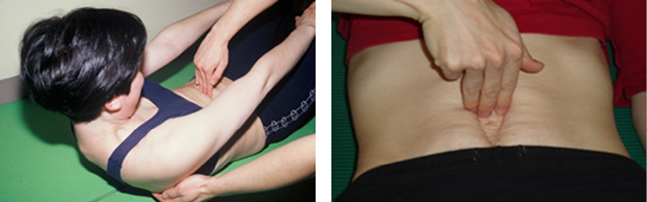
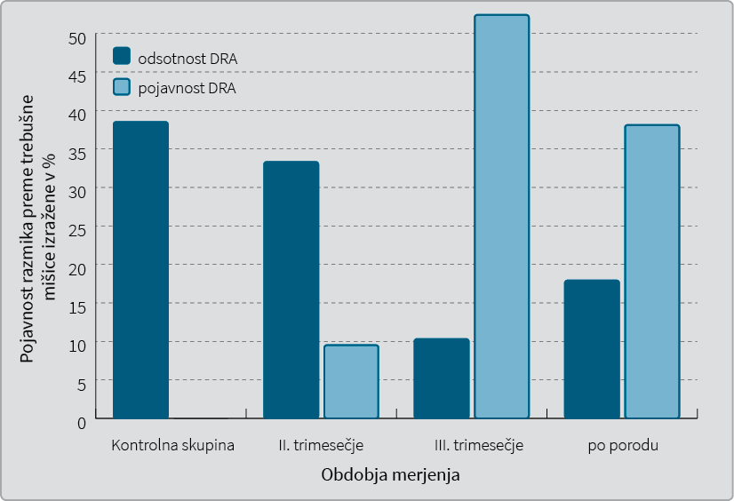
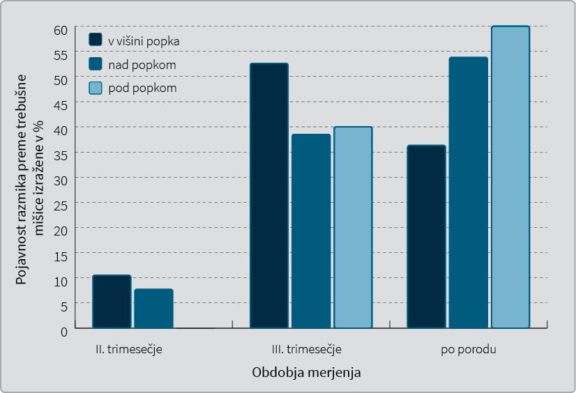

Pojavnost in mesto razmika preme trebušne mišice pri nosečnicah in otročnicah v porodnišnici Ljubljana
The incidence and location of diastasis rectus abdominis during the childbearing year and puerperium at the maternity hospital Ljubljana
Izvleček
Abstract
1 Uvod
Čezmeren razmik preme trebušne mišice (
V literaturi zasledimo različne podatke o tem, kaj je normalna oz. nenormalna DRA (1-4). Beer in sodelavci (2) so pri nenosečih ženskah ultrazvočno kot normalen razmik opredelili 15 mm v predelu žličke, 22 mm v predelu 3 cm nad popkom in 16 mm v predelu 2 cm pod popkom. Noble (5) je opredelil povečan razmik s širino dveh prstov ali več na ravni popka, nad ali pod njim. Rath s sodelavci (4) so v raziskavi na truplih kot mejno točko za določitev nenormalnega razmika določili vrednost 10 mm nad popkom, 27 mm v višini popka in 9 mm pod popkom.
Dolgotrajen in naraščajoči pritisk znotraj trebušne votline lahko povzroči, da se bela črta in prema trebušna mišica raztegneta in stanjšata, zato se prema trebušna mišica razmakne (6). Pri ženskah se DRA zaradi vpliva hormonov in rastočega ploda, ki pritiska na trebušne mišice in belo črto, najpogosteje pojavi v nosečnosti (1,3) in po porodu (3,6,7). Povečane ravni estrogena, progesterona in relaksina zmehčajo vezivno tkivo, rastoči plod pa stopnjuje pritisk na te strukture (5,8).
Boissounnault in Blaschak (3) sta v svoji raziskavi ugotovila, da premosorazmerno s trajanjem nosečnosti narašča pojavnost DRA (od 27 % na 66 %). Mota (9) je poročala celo o 100 % prisotnosti razmika v pozni nosečnosti. Pojavnost razmika se nekaj dni po porodu nekoliko zmanjša (53–65 %) (3,7,8), v obdobju do osem tednov po porodu pa se pomembno zmanjša (1,3,6,10-13). Razmik, ki je prisoten šest mesecev do enega leta po porodu, se ne popravi spontano (11,12). DRA se največkrat pojavi v predelu popka, nekoliko manj nad popkom in najmanj pod popkom (3,5,13), kar sovpada z zgradbo sprednje trebušne stene (14). Podatkov, ki bi govorili o tem, da je mesto DRA v različnih populacijah različno, v literature nismo zasledili.
Namen raziskave je bil ugotoviti pojavnost in mesto DRA pri nosečnicah po trimesečjih in otročnicah v Porodnišnici Ljubljana.
2 Material in metode
2.1 Preiskovanci
V raziskavo, ki jo je odobrila državna Komisija za medicinsko etiko, je bilo vključenih 60 naključno izbranih žensk, in sicer 45 iz ljubljanske porodnišnice (30 nosečnic in 15 otročnic), ostalih 15 nenosečih žensk pa je bilo s področja Ljubljane. Preiskovanke so bile razdeljene v štiri skupine po 15 žensk (nikoli noseče, noseče v drugem trimesečju, noseče v tretjem trimesečju in otročnice 3 dni po porodu). Ženske, ki so sodelovale v raziskavi, so bile stare od 18–35 let. Vključene so bile prvesnice s plodom v vzdolžni legi, ki so rodile vaginalno med 37. in 42. tednom gestacije. Ženske, ki so imele nepravilno oživčenje prsnega koša ali trebuha, mišične nepravilnosti prsnega koša ali trebuha in nepravilnosti okostja prsnega koša ali trebuha, smo izločili iz raziskave. Telesna dejavnost (izvajanje vaj za krepitev trebušnih mišic) v nosečnosti je tudi bila izključitveno merilo.
2.2 Merilna metoda in pripomočki
Pred meritvami so preiskovanke dobile natančna navodila in vprašalnik, s pomočjo katerega smo ugotovili vključitvena in izključitvena merila ter jih pravilno razvrstili v skupine. Meritve DRA je opravljal samo en preiskovalec z metodo širine prstov. Metoda merjenja DRA s pomočjo širine prstov velja za zanesljivo, če jo izvaja en sam preiskovalec (KW > 0,70), in zmerno zanesljiva pri več različnih preiskovalcih (KW = 0,53) (15). Meritev je preiskovalec izvedel na postelji oz. blazini, medtem ko je preiskovanka leže na hrbtu izvedla upogib trupa do dviga spodnjega roba lopatic od podlage (Slika 1) (3). Meritve je preiskovalec izvedel na treh točkah, in sicer v področju popka, 4,5 cm nad popkom in 4,5 cm pod popkom (3). DRA je bila opredeljena kot prisotna oz. odsotna. Kot prisoten je bil opredeljen razmik, ki je bil večji od širine 2 prstov (5).

2.3 Statistične metode
S pomočjo kvotnega načina vzorčenja, pri katerem so bile skupine izenačene po pomembnih dejavnikih (starost nosečnice, zdrava nosečnost, prva nosečnost, en plod v vzdolžni legi, vaginalni porod ob pričakovanem roku), smo dobili uravnotežen vzorec treh skupin: dve skupini nosečnic, ena skupina otročnic, kontrolna skupina opazovank za nadaljnje primerjave. Podatke smo zbrali z vprašalnikom, ki so ga izpolnile opazovanke same. Za analizo podatkov o pojavnosti in umestitvi DRA smo uporabili metodo hi–kvadrat (χ2). Izvedli smo analizo variance s testom mnogoterih primerjav (Tukeyev post hoc test in Dunnettov test). Dunnettov test je posebej primeren za t. i. post hoc primerjave med testno in kontrolno skupino.
Raziskavo je odobrila Komisija za medicinsko etiko RS, dne 22. 1. 1999 (sklep št. 75/01/99).
3 Rezultati
S Slike 2 je razvidno, da je pojavnost DRA v opazovanem vzorcu najprej naraščala, potem pa v skupini otročnic takoj po porodu padla. Pogostost razmika je bila najvišja v opazovani skupini nosečnic v tretjem trimesečju nosečnosti (52,4 %) in nekoliko nižja pri otročnicah tri dni po porodu (38,1 %). Pri opazovanju nosečnic v drugem trimesečju nosečnosti smo razmik zasledili pri 9,5 % opazovankah. V skupini žensk, ki niso bile nikoli noseče (kontrolna skupina), razmik preme trebušne mišice ni bil prisoten (Slika 2). Izbran način prikaza sešteva v 100 % prisotnost (takih opazovank je 21) in odsotnost DRA (takih opazovank je 39) v različnih obdobjih opazovanja. Na ta način prikažemo, kakšna je prisotnost pojava DRA v različnih obdobjih nosečnosti in po porodu. Razlike med skupino opazovanih žensk, pri katerih se je razmik preme trebušne mišice pojavil, in med drugimi, pri katerih razmik ni bil prisoten, so se izkazale za statistično pomembne (χ2 = 23.077, p < 0.001). Statistična značilnost je privzeta na stopnji tveganja 0,05.

V nadaljevanju se osredinjamo le na opazovanke, pri katerih je bila prisotna DRA (podrobneje torej obravnavamo 21 opazovank). Iz Slike 3 je razvidno, da je bila pojavnost DRA v višini popka najpogostejša pri nosečnicah v tretjem trimesečju (52,6 %), medtem ko je bil razmik nad popkom najpogostejši pri otročnicah tri dni po porodu (53,8 %). Pri otročnicah tri dni po porodu pa je bila dejansko največja pojavnost razmika pod popkom (60 %) (Slika 3). Razlike v pojavnosti višine razmika med tremi opazovanimi skupinami žensk se niso izkazale za statistično pomembne (χ2 = 1.661, p = 0.798). Iz slike je tudi razvidno, da se je čezmerna DRA pod popkom pojavila šele pri nosečnicah v tretjem trimesečju in vedno v povezavi s prisotnostjo razmika nad popkom ali v višini popka.

Rezultat analize variance nam pove, da prihaja do statistično pomembnih razlik med skupinami glede pojavnosti DRA (F = 11.667, p < 0.000). Z Dunnettovim testom smo primerjali povprečja med posamezno testno skupino in kontrolno skupino opazovank in ugotovili, da se od kontrolne skupine statistično pomembno razlikujejo nosečnice v tretjem trimesečju nosečnosti (p < 0.000) in otročnice po porodu (p = 0.001).
4 Razpravljanje
Dobljeni rezultati naše raziskave kažejo na statistično pomembno premosorazmerno povezavo med trajanjem nosečnosti in pojavnostjo DRA, medtem ko po porodu pojavnost pade.
V literaturi ni enotne definicije razmika DRA. Do razlik v pojavnosti razmika lahko prihaja zaradi neenotnih opredelitev mejne vrednosti, ki določa prisotnost razmika (1-5,7), in različnega mesta merjenja vzdolž bele črte (7,8,15). Prav tako se razlikuje stopnja aktiviranja trebušnih mišic med merjenjem (12,16,18). Za merjenje DRA lahko uporabljamo različna merilna orodja oz. metode (8,10,15,16,18-21). Tudi stanje, v katerem je preiskovanka, se lahko razlikuje: nenoseča, prvesnica, mnogorodka, otročnica. Prav zaradi razlik v dejavnikih, ki vplivajo na rezultate merjenja, dobljene rezultate obstoječih raziskav težko primerjamo med seboj. V naši raziskavi smo uporabili Noblovo klasifikacijo, ki navaja, da je povečan razmik preme trebušne mišice vsak razmik vzdolž bele črte, ki je večji od 2 cm oz. dveh preiskovalčevih prstov (5). Meritve pa smo opravili na treh mestih: v predelu popka, 4,5 cm pod njim in 4,5 cm nad njim (3). V obstoječi literature zasledimo tri raziskave, ki so merile pogostost DRA med nosečnostjo in po porodu (3,9,22) Naši rezultati o pojavnosti razmika so najbolj primerljivi z rezultati raziskave, ki sta jo opravila Boissonnault in Blaschake (3), saj sta uporabila enako metodo merjenja (merjenje z metodo širine prstov) in enako mesto merjenja, kot smo ju v naši raziskavi. Poročala sta o 27 % pojavnosti v drugem trimesečju in 66 % pogostosti v tretjem trimesečju. Prav tako je Sperstad s sodelavci (22) poročal o 33,1 % pogostosti razmika v 21. tednu gestacije ob enaki merilni metodi, na enakih merilnih mestih in pri isti mejni vrednosti za razmik. Mota s sodelavci (9), ki je v svoji raziskavi meril DRA pri prvesnicah z ultrazvočno preiskavo 2 cm pod popkom, so poročali celo o 100 % pogostosti razmika v pozni nosečnosti. Pojavnost razmika nekaj dni po porodu pa je v naši raziskavi (38,1 %) manjša kot v raziskavi Boissonnaulta in Blaschakea (3) (53 %). Tudi Bursch je v svoji raziskavi, ki jo je opravil na otročnicah manj kot štiri dni po porodu, poročal o večji, v 62,5 %, pojavnosti DRA, večji od širine dveh prstov (7). Čeprav razlike niso bile statistično pomembne, je bilo v naši raziskavi najbolj pogosto mesto povečanega razmika popek v tretjem trimesečju. Tri dni po porodu pa je bil razmik najbolj pogost pod popkom in nekoliko manj pogost nad popkom. Najbolj primerljive rezultate pojavnosti razmika glede na mesto pojava sta opisala tudi Boissonnault in Blaschake (3). V naši raziskavi smo kot merilno metodo za ugotavljanje razmika uporabili metodo širine prstov. Ugotavljanje DRA z metodo širine prstov se je pokazalo za zanesljivo, če meritve opravlja en preiskovalec, kot smo to storili v naši raziskavi, in zmerno zanesljivo pri različnih preiskovalcih (15). V klinični praksi je merjenje razmika s pomočjo prstov še vedno najbolj razširjena metoda, ker je enostavna za uporabo, ne zahteva posebne opreme in ni draga (7,15). DRA lahko izmerimo tudi s kljunastim merilom, ki je zanesljiv merilni inštrument, ko merimo razmik nad popkom in v predelu popka (16,17). Najbolj zanesljivo pa je ugotavljanje DRA z ultrazvokom (8,10,12,15,17-21). Žal pa je ultrazvočna naprava draga in zato ni na voljo v vseh fizioterapevtskih ambulantah. Potrebno pa je tudi dodatno usposabljanje za meritve.
Zaradi majhnega vzorca je veljavnost dobljenih rezultatov zelo omejena, nakazana pa je smer gibanja pogostosti DRA med nosečnostjo in po porodu. Zaradi zasnove raziskave (meritve niso bile narejene pri isti preiskovanki v različnih obdobjih nosečnosti in po porodu) je potrebno poudariti, da lahko iz rezultatov raziskave o pogostosti DRA le sklepamo.
Potrebna je nadaljnja longitudinalna raziskava o razvoju in dinamiki nenormalnega razmika preme mišice med nosečnostjo in po porodu, ki bi lahko bila tudi osnova za raziskave o možnostih preprečevanja nastanka razmika.
Za preprečevanje je seveda potrebno najprej dobro poznavanje dejavnikov tveganja, o katerih lahko zdaj le ugibamo. Prav tako je le malo dokazov o učinkovitosti fizioterapevtskih postopkov za zmanjševaje že prisotnega razmika. Samo s pravilno obravnavo DRA lahko zmanjšamo pojavnost le tega, preprečimo napredovanje razmika in se s tem izognemo kasnejšim težavam, ki so lahko posledica DRA (23-31).
Pri obravnavi DRA se je potrebno najprej posvetiti terapevtskim vajam za stabiliziranje trupa, šele nato vključiti terapevtske vaje za zmogljivost preme mišice in obračalk trupa. Cilj obravnave je mišična hipertrofija in krajša mišica. Iz trenutnih podatkov je namreč razvidno, da je za zdravljenje razmika bolj učinkovito aktiviranje prečnih trebušnih mišic kot aktiviranje preme trebušne mišice (31). Aktiviranje prečne trebušne mišice belo črto stabilizira, medtem ko aktiviranje preme trebušne mišice naredi belo črto ohlapno. Ohlapna in nestabilna bela črta ne bo preprečila povečanja razmika preme trebušne mišice med povečevanjem pritiska v trebušni votlini.
5 Zaključek
DRA je pogost pojav v nosečnosti in po porodu. Pojavil se je pri vsaki drugi nosečnici v pozni nosečnosti, po porodu pa bil še pri vsaki četrti otročnici. Potrebne so nadaljnje raziskave z večjim vzorcem, enotnimi mejnimi vrednostmi za prisotnost oz. odsotnost razmika in z enotnimi mesti merjenja razmika. Poleg tega so potrebne raziskave, ki bodo dokazale dejavnike tveganja zaradi preprečevanja DRA, in raziskave, ki bodo dokazale učinkovitost posameznih fizioterapevtskih postopkov za zmanjševanje razmika. Vsi zdravstveni delavci in tudi športni delavci, ki prihajajo v stik z nosečnicami in ženskami po porodu, bi morali biti seznanjeni z dejstvom, da je DRA v velikem odstotku prisotna tako pri nosečnicah kot pri otročnicah. Usposobiti jih je treba, da na podlagi testiranja razmika ocenijo, katere ženske potrebujejo nadaljnjo fizioterapevtsko obravnavo. Poleg tega pa je o tem potrebno seznaniti tudi ženske same.